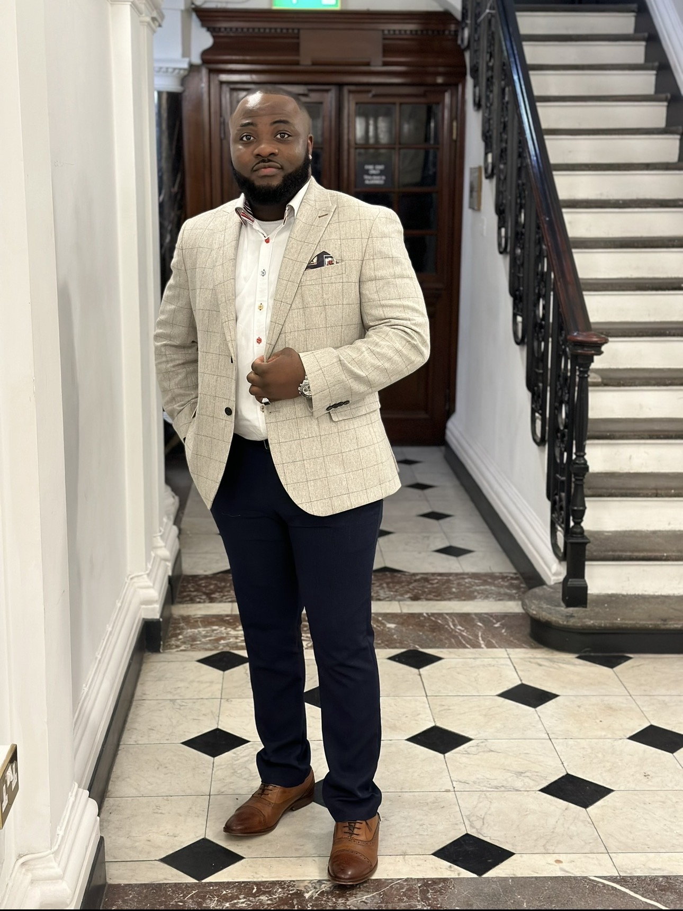

I am a UK-based healthcare professional with a growing focus on entrepreneurship and long-term business development. My interests lie in building scalable ventures, particularly in agriculture and emerging markets, while continuously improving my professional capabilities.
My goal is to build sustainable businesses that create value, generate income, and contribute to long-term economic development.
With a foundation in healthcare, I bring discipline, resilience, and analytical thinking into business and investment opportunities.